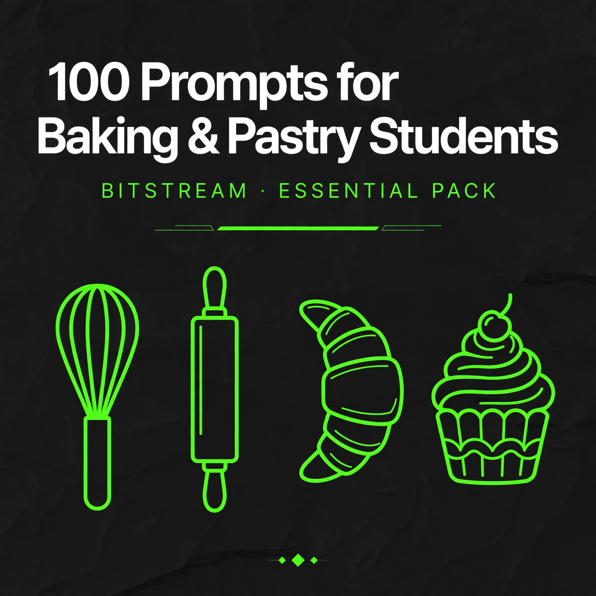

BITSTREAM · ZERO FILLER. ALL VALUE.
100 Prompts
for First-Year Baking & Pastry Students
100 copy-paste prompts for culinary students learning baking & pastry fundamentals.
Open a free AI tool, paste, fill in the blanks, done.
ESSENTIAL PACK · $7.99
How to use this pack (60 seconds)
- Open a free AI tool — ChatGPT (chatgpt.com), Claude (claude.ai), Gemini (gemini.google.com), or Meta AI. No account tricks, no paid plan needed.
- Copy any prompt and replace the [BRACKETED] parts with your details — the recipe you're working on, the equipment you have, the term you don't understand.
- Describe your kitchen. Home oven or school lab, stand mixer or hand mixer, metric or cups — specifics in, quality out. "Explain proofing" gets a textbook answer. "Explain proofing for my dough in a 68-degree kitchen with no proof box" gets advice you can use today.
- Use it as a tutor, not a textbook. Ask follow-ups: "quiz me on that," "explain it like I'm 12," "now give me 5 practice questions." The back-and-forth is where the learning happens.
- Double-check food safety answers. AI is a fast study buddy, but your program's sanitation standards are the final word. When a prompt touches temperatures, storage times, or allergens, verify against your class notes before trusting it.
Rule 1 — Say what you have. Your oven, your mixer, your pans, and your skill level change every answer. "My biscuits failed" gets guesses. "My biscuits failed in a convection home oven, I used a food processor to cut in the butter" gets a diagnosis.
Rule 2 — AI explains, your hands learn. No prompt replaces reps. Use these to understand the why, then go bake the thing. The tenth tart shell teaches what no chatbot can.
Rule 3 — Verify anything safety-critical. Temperatures, cooling and storage times, allergen handling, and sanitation rules must match your program's standards. If the AI's answer differs from your instructor's, your instructor wins.
1 · Baking Science Fundamentals
Gluten, leavening, sugar, fats, eggs, and browning — the why behind every recipe.
PROMPT 01
Gluten: bread flour vs cake flour
Explain what gluten is and why it matters in baking, in plain first-year-student language. Then compare [bread flour] and [cake flour]: protein content, what each does in a finished product, and which one to use for [a tender vanilla cake] vs [a chewy pizza-style crust].
PROMPT 02
Leavening agents compared
Compare [baking soda], [baking powder], and [yeast] for a first-year baking student: how each one works, what it needs to activate, one classic recipe each appears in, and the most common mistake that makes each one fail. End with 3 quick quiz questions.
PROMPT 03
Sugar does more than sweeten
Explain the four jobs sugar does in baking beyond sweetness: [structure/tenderizing, moisture retention, browning, and shelf life]. Use [a butter cookie recipe] as the example — tell me what would change if I cut the sugar by half.
PROMPT 04
Fats: butter vs oil vs shortening
I'm learning how fats affect baked goods. Compare [butter], [vegetable oil], and [shortening] in [a layer cake]: flavor, texture, moisture, and which mixing method each needs. Tell me which one gives the most tender crumb and why.
PROMPT 05
Eggs in baking, broken down
Explain what [whole eggs], [yolks only], and [whites only] each contribute to [a pound cake] — structure, richness, moisture, leavening. Also explain why recipes say "room temperature eggs" and what happens if I skip that step.
PROMPT 06
Maillard vs caramelization
Explain the difference between the [Maillard reaction] and [caramelization] like I'm a first-year culinary student. Give one baking example of each — [a baguette crust] and [a crème brûlée top] — and name the temperature range where each one kicks in.
PROMPT 07
Why "don't overmix"
Explain in simple terms why overmixing ruins [muffins] but is required for [bread dough]. Describe what's happening to the gluten in each case, what the overmixed result looks and tastes like, and the one visual cue that tells me to stop mixing [muffin batter].
PROMPT 08
Salt's job in baking
Explain what salt does in [a yeast bread recipe] beyond flavor: its effect on [yeast activity], [gluten strength], and [crust color]. Then tell me what goes wrong if I leave the salt out entirely.
PROMPT 09
Oven spring explained
Explain oven spring for a first-year student: what it is, why my [dinner rolls] puff up in the first 10 minutes of baking, the three things that make oven spring strong, and the two most common reasons it doesn't happen.
PROMPT 10
Dense cake diagnosis
My [vanilla layer cake] came out dense and heavy. Here's my recipe and method: [paste recipe]. I mixed for [4 minutes on high after adding flour] and my oven runs [25°F hot]. Diagnose the most likely cause, explain the science, and tell me exactly what to change next time.
2 · Kitchen Math & Baker's Percentages
Percentages, scaling, conversions, and costing — the math that runs a pastry kitchen.
PROMPT 11
Convert a recipe to baker's percentages
Convert this recipe to baker's percentages, showing your math step by step so I can learn the method: [paste recipe with weights]. Flag any ingredient where the percentage looks off for [a lean bread dough] and explain why.
PROMPT 12
Scale from percentages to a target yield
I have a bread formula in baker's percentages: [flour 100%, water 65%, salt 2%, yeast 1.5%]. I need [3,000g] of total dough. Calculate the exact weight of each ingredient, show the formula, and round sensibly for a kitchen scale.
PROMPT 13
Halve or double a home recipe
Scale this recipe [up 1.5x]: [paste recipe in cups and spoons]. Convert every measurement, simplify the awkward fractions (no "2.67 eggs" — tell me what to actually do), and warn me about any ingredient that shouldn't scale linearly, like [yeast or leavening].
PROMPT 14
Weight conversion chart
Make me a quick-reference conversion chart for the ingredients I use most: [all-purpose flour, bread flour, granulated sugar, brown sugar, powdered sugar, butter, cocoa powder, honey]. Give cups to grams for each, note where packing or sifting changes the number, and add a warning about the two most commonly mis-measured.
PROMPT 15
Temperature conversions + oven check
Convert these baking temperatures both ways and explain the formula: [350°F, 400°F, 425°F, 180°C, 200°C]. Then explain how to check if my [home oven] runs hot or cold using an oven thermometer, and how to adjust when a recipe says [375°F] but my oven runs [25°F hot].
PROMPT 16
Food cost per batch
Help me calculate the food cost for one batch of [chocolate chip cookies, 24 cookies]. Here are my ingredient prices: [list prices and package sizes]. Show cost per ingredient, total batch cost, and cost per cookie. Then tell me what a [3x] markup would make the selling price.
PROMPT 17
Yield planning for an event
I need to produce [120 dinner rolls] for [a school event]. My recipe makes [24 rolls] using [500g flour]. How many batches do I need, what's the total flour and other ingredients required, and how should I schedule mixing if my mixer only handles [1kg of flour at a time]?
PROMPT 18
Desired dough temperature math
Teach me the desired dough temperature calculation like a first-year student. My target dough temp is [76°F], flour temp is [70°F], room temp is [72°F], and my mixer's friction factor is [8°F]. Walk through the formula step by step and give me the water temperature to use.
PROMPT 19
Pan size conversions
My cake recipe is written for [two 8-inch round pans] but I only have [one 9x13-inch pan]. Can I convert it? Calculate the volume difference, tell me how to adjust the batter amount and bake time, and warn me about what changes in the finished cake's texture.
PROMPT 20
Spot the scaling errors
Quiz me: here is a recipe that a classmate scaled from 12 servings to 60 — [paste recipe]. Find the [3] math or technique errors they made (wrong conversions, ingredients that don't scale linearly, impossible measurements). Don't give me the answers until I guess.
3 · Mise en Place & Production Workflow
Prep lists, timing plans, and station discipline — the habits that separate students from pros.
PROMPT 21
Prep list for a production day
I'm making [pizza dough, focaccia, and chocolate chip cookies] in one [4-hour] lab session. Build me a complete prep list: every ingredient weighed and grouped by recipe, all equipment needed, and the order to prep everything in. Assume I have [one stand mixer and one home oven].
PROMPT 22
Order of operations
I need to make [pie dough, pastry cream, and a sponge cake] in [3 hours]. Tell me the smartest order to work in and why — what needs chilling, what needs cooling before the next step, and where the dead time is that I can use for cleanup.
PROMPT 23
Station setup checklist
Give me a station setup checklist for [a laminated dough lab day] in culinary school: tools, ingredients in order of use, what should be cold vs room temp at the start, and the 5 things students always forget. Format it as a checklist I can print.
PROMPT 24
Work backwards from a deadline
My [decorated tart] has to be finished and plated by [2:00 PM] for grading. The steps are: [make pâte sucrée, blind bake, make pastry cream, assemble, chill, glaze]. Build me a backwards timeline with start times for each step, including chilling and cooling windows.
PROMPT 25
Make-ahead vs day-of plan
I'm producing [dinner rolls, a lemon tart, and vanilla panna cotta] for [Saturday service] but I only have Friday evening and Saturday morning. Tell me exactly what to make ahead Friday (with storage instructions) and what must wait for Saturday, and why.
PROMPT 26
Partner task split
My lab partner and I have [2.5 hours] to produce [a batch of croissants through the first fold, plus a fruit galette]. Split the work between two people so nobody stands around: who does what, in what order, with handoff points.
PROMPT 27
Clean-as-you-go system
Teach me a clean-as-you-go system for a [shared pastry station] during a busy [bread and viennoiserie] lab. When do I wash, when do I wipe, what stays out vs gets put away — and the 3 messes that will slow me down if I let them pile up.
PROMPT 28
Recipe scan: ingredients + tools
Read this recipe and pull out everything I need before I start: [paste recipe]. List every ingredient with its amount, every tool and pan, and flag anything that needs to be [room temperature], [chilled], or [preheated] before I begin.
PROMPT 29
Recovery plan when behind
I'm [30 minutes] behind in lab and still need to finish [shaping rolls, baking them, and making a simple glaze] before grading at [the end of class]. Help me triage: what to simplify, what to skip without failing the assignment, and what to tell my instructor.
PROMPT 30
End-of-shift closeout
Give me an end-of-shift closeout checklist for [a pastry lab station]: how to label and store [leftover dough, pastry cream, and cut fruit], what gets washed vs wiped, and the 4 things instructors check when they inspect stations.
4 · Quick Breads, Muffins & Biscuits
Mixing methods, flaky layers, and fixing dense, tough, or flat results.
PROMPT 31
Muffin method vs biscuit method
Teach me the [muffin method] and the [biscuit method] step by step as a first-year student. For each: the order ingredients are combined, what the batter/dough should look like at each stage, and the one mistake that ruins each method.
PROMPT 32
Dense muffin diagnosis
My [blueberry muffins] came out dense and tough with tunnels inside. I [mixed the batter for 3 minutes until smooth] and used [frozen blueberries straight from the freezer]. Diagnose what went wrong, explain the science of each problem, and give me the corrected method.
PROMPT 33
Flaky biscuit technique
Walk me through making flaky [buttermilk biscuits] from scratch: how to cut in the [cold butter], how big the butter pieces should be, the folding technique, how thick to roll, and how to cut without sealing the edges. I have [no pastry cutter — only two knives and my hands].
PROMPT 34
Biscuits didn't rise
My biscuits spread flat and barely rose. Possible culprits: my baking powder is [8 months old], I used [melted butter instead of cold], and I [twisted the cutter]. Rank these by likelihood, explain each one's effect, and tell me how to test my baking powder.
PROMPT 35
Muffin add-in swaps
I have a basic [vanilla muffin] recipe I like. Show me how to turn it into [3] variations: [lemon-blueberry, chocolate chip, and apple-cinnamon]. For each: what to add or swap, how much, and any adjustment to sugar, liquid, or bake time.
PROMPT 36
Cornbread texture control
I want [cakey, moist] cornbread, not dry and crumbly. Here's my recipe: [paste it]. Tell me what to change — flour-to-cornmeal ratio, fat, sugar, liquid — and explain why each change moves the texture in the direction I want.
PROMPT 37
Make-ahead biscuits and muffins
I want to prep [biscuit dough] and [muffin batter] ahead for [a Saturday brunch]. Tell me what can be frozen or refrigerated, for how long, exactly how to store each, and how to bake from frozen — including time and temperature adjustments.
PROMPT 38
Wet-center banana bread
My [banana bread] is raw and gummy in the center but the outside is dark. I baked at [350°F] in a [glass loaf pan] for [55 minutes]. Diagnose the problem and give me the fix: pan choice, temperature, time, and how to test doneness properly.
PROMPT 39
Scone shaping and baking
Teach me to make [cream scones]: mixing, shaping the dough into a round, cutting wedges without compressing them, spacing on the pan, and the egg wash. Also explain why my last batch came out [dry and crumbly] and how to fix it.
PROMPT 40
Mixing-method quiz
Quiz me like a practical exam: give me [6] ingredient lists (one at a time), and I have to name the mixing method — [muffin, biscuit, creaming, or one-bowl] — and explain my reasoning. Correct me when I'm wrong and explain why.
5 · Yeasted Doughs & Breads
Kneading, proofing, shaping, and rescuing the loaves that go wrong.
PROMPT 41
Kneading and the windowpane test
Teach me to knead [a basic white bread dough] by hand: how long, what motion, what the dough should feel like at [3 minutes, 8 minutes, and done]. Explain the windowpane test step by step and what it tells me about gluten development.
PROMPT 42
Proofing 101
Explain proofing for a first-year student: what happens inside the dough, the ideal temperature range, how to do the [poke test] to judge readiness, and what under-proofed vs over-proofed dough looks and feels like. My kitchen is [68°F with no proof box] — give me workarounds.
PROMPT 43
Dough didn't rise
My [pizza dough] barely rose after [2 hours]. The yeast was [instant yeast, 3 months old], my water was [120°F], and the kitchen was [65°F]. Walk me through diagnosing this step by step — is the yeast dead, was the water too hot, or is it just slow? Tell me how to test and whether the dough is salvageable.
PROMPT 44
Shaping rolls, boules, and baguettes
Teach me to shape [dinner rolls]: dividing evenly, the tuck-and-roll motion, and how tight the surface should be. Then compare with shaping a [boule] and a [baguette] — what's different in technique and why. List the 3 shaping mistakes beginners always make.
PROMPT 45
Enriched doughs: brioche and challah
Explain what makes [brioche] an enriched dough vs a lean dough like [a baguette]: the role of [butter, eggs, and sugar], why enriched doughs ferment slower, how mixing changes (and why the butter goes in last), and the signs of a properly developed brioche dough.
PROMPT 46
Cold retard scheduling
I want to bake [sourdough-style sandwich loaves] for [Saturday morning] but I have class all day Friday until 5 PM. Build me a schedule using an overnight cold retard: when to mix, bulk ferment, shape, and refrigerate Friday evening, and exactly what to do Saturday morning.
PROMPT 47
Scoring, steam, and doneness
Teach me the finishing steps for [a rustic boule]: how to score it (angle, depth, pattern), how to create steam in a [home oven with no steam injection], the right baking temperature, and three ways to tell when it's done — including internal temperature.
PROMPT 48
Stale bread rescue and storage
Explain why bread goes stale (it's not just drying out — explain [starch retrogradation] simply). Then give me: the best way to store [a crusty loaf] vs [soft sandwich bread], how to revive day-old bread, and 3 things to make with bread that's too stale to eat fresh.
PROMPT 49
Cinnamon rolls start to finish
Walk me through [cinnamon rolls] for a first-year student: the enriched dough, rolling to an even rectangle, the filling ratio of [butter, brown sugar, cinnamon], how tight to roll, cutting without squishing, proofing the cut rolls, bake temp and time, and when to frost.
PROMPT 50
Bread faults chart
Build me a troubleshooting chart for [yeast breads]: for each of these faults — [dense crumb, pale crust, collapsed loaf, thick tough crust, large tunnels] — list the 2-3 most likely causes and the fix for each. Format it as a table I can tape inside my locker.
6 · Pastry Doughs: Pies, Tarts, Puff & Choux
Flaky, tender, and laminated — the doughs that make or break a pastry student.
PROMPT 51
Brisée vs sucrée vs sablée
Compare the three classic French tart doughs for a first-year student: [pâte brisée, pâte sucrée, and pâte sablée]. For each: the key ingredients and ratios, the texture, and exactly when to use it — [a savory quiche], [a fruit tart], and [a lemon tart].
PROMPT 52
Blind baking a tart shell
Walk me through blind baking a [9-inch tart shell] step by step: docking, lining, what to use for weights if I don't have [pie weights], oven temperature, when to remove the weights, and how to tell the shell is done. Include how to prevent the sides from slumping.
PROMPT 53
Puff pastry lamination basics
Explain lamination for [rough puff pastry] like I'm a first-year student: the détrempe and beurrage, how many [single turns] to give it, why resting between turns matters, and the #1 reason butter breaks through the dough. I have [a warm kitchen, around 74°F] — give me temperature workarounds.
PROMPT 54
Soggy bottom on a fruit tart
My [fresh fruit tart] has a soggy bottom. I [blind baked the shell, filled it with pastry cream, and topped with fresh berries]. Diagnose the cause — was it the bake, the filling moisture, or the assembly timing? Give me the fix for next time plus one rescue for the tart I already made.
PROMPT 55
Choux pastry from scratch
Teach me [choux pastry] step by step: making the panade, how to tell the panade is dry enough, adding eggs [one at a time], the right final consistency, piping with a [large round tip], and the baking strategy that keeps them from collapsing.
PROMPT 56
Choux collapsed
My [cream puffs] puffed beautifully then collapsed as they cooled. I baked at [400°F for 20 minutes] and [opened the oven twice to check]. Diagnose what happened, explain the science, and give me the corrected bake — temperature, time, and the test for doneness.
PROMPT 57
Free-form galette technique
Teach me a [rustic apple galette]: rolling the dough, arranging the fruit, folding the edges, the egg wash and sugar finish, and baking. Explain why a galette is more forgiving than a pie for a beginner, and the one thing that still ruins it.
PROMPT 58
Lattice top weaving
Teach me to weave a lattice top for a [9-inch cherry pie]: how wide to cut the strips, the over-under pattern step by step, how to seal the edges to the bottom crust, and the egg wash. Include the 2 mistakes that make a lattice look messy.
PROMPT 59
Tart filling ratios
I need filling formulas for [two] tarts: a [frangipane tart] and a [lemon curd tart], both in [9-inch] shells. Give me the ingredient ratios, how full to fill each shell, bake times and temperatures, and how to tell each one is set.
PROMPT 60
Pastry dough storage timelines
Give me storage rules for [pâte brisée, puff pastry, and choux paste]: how long each keeps in the fridge, how long in the freezer, how to wrap each one, and how to thaw properly. Flag the one that should never be refrozen.
7 · Cakes & Cupcakes
Mixing methods, level layers, smooth frosting, and fixing the cakes that fail.
PROMPT 61
Cake mixing methods compared
Compare the [creaming method], [reverse creaming], and [one-bowl/blended method] for a first-year student: the steps of each, what texture each produces, and which one to choose for [a birthday layer cake] vs [a quick weeknight snack cake].
PROMPT 62
Cake sank in the middle
My [chocolate layer cake] sank in the center. I [opened the oven at 15 minutes to rotate the pans], my leavening is [fresh], and I [used a 9-inch pan instead of the 8-inch the recipe called for]. Rank the likely causes, explain the science of each, and tell me the fix.
PROMPT 63
Leveling and torting layers
Teach me to level and torte [two 8-inch cake layers] with [a long serrated knife — no cake leveler]: how to mark the cut line, the sawing motion, how to keep the layers even, and what to do with the domed tops I cut off.
PROMPT 64
Buttercream basics
Compare [American buttercream] and [Swiss meringue buttercream] for a beginner: ingredients, difficulty, sweetness, stability in [warm weather], and which one to use for [a smooth-frosted birthday cake]. Give me a starter recipe for the easier one.
PROMPT 65
Crumb coat and smooth finish
Walk me through frosting a [layer cake] smoothly: the crumb coat (how thin, how long to chill), the final coat technique with [an offset spatula and a bench scraper], and how to fix [a torn spot where crumbs show through].
PROMPT 66
Cupcake fill levels and tops
Explain cupcake science: how full to fill the liners for [flat tops vs domed tops], the right oven temperature, and why my cupcakes [overflowed and stuck to the pan] last time. Give me the fix and the ideal bake time for [standard-size cupcakes].
PROMPT 67
Cracked cake tops
My [pound cake] cracked deeply across the top. I baked at [350°F] and the recipe said [325°F]. Explain why too-hot ovens crack cakes, whether a cracked top means the inside is ruined, and how to prevent it — including the pan and rack position factors.
PROMPT 68
Flavor variations from one base
I have a reliable [vanilla butter cake] recipe. Show me how to adapt it into [chocolate, lemon, and spice] versions: exactly what to swap or add for each, how much, and what to watch out for (like cocoa powder drying out the batter).
PROMPT 69
Make-ahead cake layers
I need [3 cake layers] ready for [Saturday assembly] but I can only bake on [Thursday]. Tell me how to cool, wrap, and freeze the layers so they taste fresh, how to thaw them without drying out, and whether to frost from frozen or thawed.
PROMPT 70
Cake method quiz
Quiz me: describe [5] finished cakes (one at a time) — their crumb, texture, and how they were mixed — and I have to name the mixing method used: [creaming, reverse creaming, one-bowl, chiffon, or genoise]. Correct my wrong answers and explain the tell.
8 · Cookies, Brownies & Bars
Texture control, spreading fixes, clean cuts, and storage that keeps them fresh.
PROMPT 71
Cookie texture control
I want to control cookie texture on purpose. Explain what makes a cookie [chewy] vs [crispy] vs [cakey]: the roles of [brown vs white sugar, melted vs creamed butter, egg count, and flour amount]. Then tell me how to adjust my [basic chocolate chip recipe] toward chewy.
PROMPT 72
Cookies spread too much
My cookies spread into thin greasy discs. Possible causes: [butter was fully melted and warm], [I skipped chilling], and [my baking sheet was dark and thin]. Rank these by impact, explain the science of each, and give me the corrected process.
PROMPT 73
Fudgy vs cakey brownies
Explain what makes brownies [fudgy] vs [cakey]: fat-to-flour ratio, egg count, leavening, and mixing. Here's my recipe: [paste it] — tell me which style it will make and exactly what to change to push it toward [fudgy].
PROMPT 74
When and why to chill dough
Explain the science of chilling cookie dough: what happens to the [fat, flour hydration, and sugar] during a [1-hour] vs [overnight] chill, which cookies benefit most, and the one type of cookie dough you should never chill.
PROMPT 75
Bar cookies: even baking, clean cuts
Teach me [blondies in a 9x13 pan]: how to line the pan for easy removal, how to tell when they're done (the center always looks underbaked), cooling time before cutting, and the technique for clean cuts without crumbling.
PROMPT 76
One dough, three cookies
I have a solid [oatmeal cookie] base dough. Show me how to make [3] variations from it: [classic raisin, double chocolate, and peanut butter chip]. For each: what to add, how much per batch, and any bake-time change.
PROMPT 77
Keeping cookies fresh
How do I store [chewy chocolate chip cookies] so they stay fresh for [5 days]? Cover: the right container, room temp vs fridge vs freezer, the trick with [a slice of bread] and whether it actually works, and what makes cookies go stale vs soggy.
PROMPT 78
Freeze cookie dough like a pro
Teach me to freeze [drop cookie dough]: scoop size, flash-freezing method, packaging, how long it keeps, and exactly how to bake from frozen — temperature and time adjustments vs fresh dough.
PROMPT 79
Blondies vs brownies
Explain the real differences between [blondies] and [brownies] beyond "one has chocolate": the role of [brown sugar and vanilla] in blondies, the shared technique, and the most common blondie mistake beginners make.
PROMPT 80
Cookie faults from descriptions
Quiz me on cookie troubleshooting: describe [5] failed batches one at a time — [flat and greasy, puffy and raw inside, hard as rocks, pale and floury-tasting, perfect edges but raw middles] — and I diagnose the cause. Correct me and explain the science when I'm wrong.
9 · Custards, Creams, Meringues & Chocolate
Tempering, whipping, and ratios — the delicate work that rewards patience.
PROMPT 81
Tempering eggs without scrambling
Teach me to temper eggs for [pastry cream] step by step: how hot the milk should be, how much to add first, the whisking motion, and the exact moment to pour back into the pot. Explain what "tempering" actually does and the sign I've added the hot milk too fast.
PROMPT 82
Pastry cream ratios and fixes
Give me a reliable [vanilla pastry cream] formula for [1 liter of milk] with the key ratios (milk, yolks, sugar, starch). Then cover: how to flavor it [chocolate, coffee, and citrus], and how to fix [lumps] — including whether straining actually saves it.
PROMPT 83
Custard family compared
Compare [crème anglaise, crème pâtissière, and crème brûlée] for a first-year student: the thickener in each, the cooking method, the final texture, and one classic use for each. End with the one mistake that ruins all three.
PROMPT 84
Meringue types and uses
Compare [French, Swiss, and Italian] meringue: how each is made, which is most stable and why, and what each is best for — [a pavlova, a pie topping, and a buttercream base]. Tell me which one a beginner should learn first.
PROMPT 85
Whipped cream stages
Explain the stages of whipping cream — [soft, medium, and stiff peaks] — what each looks like, which stage to use for [folding into mousse] vs [piping decorations], and how to rescue [slightly overwhipped] cream. Also: why does [cold equipment] matter?
PROMPT 86
Ganache ratios
Explain ganache ratios for a first-year student: [1:1, 2:1, and 1:2 chocolate to cream] — what texture each makes and when to use it ([glaze, truffle filling, whipped frosting]). Give me the method and the visual cue that the ganache is at the right consistency for [dipping truffles].
PROMPT 87
Melting chocolate without seizing
Teach me to melt [dark chocolate] two ways: [microwave and double boiler]. Explain what seizing is, the two things that cause it, and — honestly — whether seized chocolate can be saved and what it's still good for.
PROMPT 88
Simple chocolate tempering
Teach me the [seed method] for tempering [dark chocolate] at home: temperatures for melt, seed, and working; how to test if it's in temper [without a thermometer]; and what properly tempered chocolate looks and sounds like when it sets.
PROMPT 89
Chocolate drizzles and decorations
Show me [5] beginner chocolate decorations I can do with just melted chocolate and basic tools: [drizzles, shards, curls, piped shapes, and dipped fruit]. For each: the technique, the tool needed, and the one tip that makes it look professional.
PROMPT 90
Custard faults and fixes
Build me a troubleshooting guide for [stirred custards]: for each fault — [curdled, weeping/weepy, grainy, too thin, skin on top] — give the cause and the fix or prevention. Tell me which faults can be rescued and which mean starting over.
10 · Food Safety, Sanitation & Practical Exam Prep
The non-negotiables: safe kitchens, clean stations, and walking into exams ready.
PROMPT 91
Danger zone temperatures
Quiz me on the temperature danger zone for a pastry kitchen: the range, why [eggs and dairy] are the highest-risk ingredients I work with, the maximum time a [pastry cream] can sit at room temperature, and the safe internal temps for [baked custards]. Correct my answers and explain the why.
PROMPT 92
Allergen cross-contamination
I'm baking in a kitchen that handles [nuts, wheat, dairy, and eggs]. Explain cross-contamination risks for a [nut-free cookie order]: what to clean, what order to bake in, how to handle shared tools like [sheet pans and scoops], and what to tell the customer honestly about risk.
PROMPT 93
Cooling and storage rules
Give me cooling and storage rules for [pastry cream, whipped cream desserts, baked fruit pies, and buttercream-frosted cakes]: how fast each must be cooled, fridge vs room temp, maximum storage times, and the signs each one has gone bad. Note where your answer might differ from my program's standards so I can verify.
PROMPT 94
Sanitation station checklist
Give me a sanitation checklist for [my pastry lab station]: handwashing when and how, sanitizer solution basics, what gets sanitized between tasks (especially after handling [raw eggs]), and the 3 sanitation mistakes first-year students make most.
PROMPT 95
FIFO labeling system
Explain FIFO for a pastry station and give me a labeling system: what goes on every label [item, date made, use-by date, initials], how to label [doughs, creams, and cut fruit] differently if needed, and what to do with an unlabeled container you find in the fridge.
PROMPT 96
Mock practical: 90-minute plan
My practical exam gives me [90 minutes] to produce [a blind-baked tart shell filled with pastry cream and topped with glazed fruit]. Build me a minute-by-minute plan: what I do in each 15-minute block, what can overlap, and where most students lose time.
PROMPT 97
Flashcard quiz: 20 baking terms
Quiz me flashcard-style on [20] first-year baking terms, one at a time: [lamination, tempering, mise en place, autolyse, blind baking, docking, crumb, proofing, ganache, fondant, ...]. I define each; you correct me and give a one-sentence memory hook for the ones I miss.
PROMPT 98
Getting the most from instructor feedback
My instructor critiqued my [puff pastry] and said [the layers weren't distinct and the bottom was soggy]. Help me turn that into learning: what follow-up questions to ask, what to practice next, and how to show improvement on the next attempt without getting defensive.
PROMPT 99
Fault-identification drill
Run an exam-style drill: describe [8] faulty products one at a time — a [sunken cake, tough muffin, collapsed soufflé-style choux, weeping meringue, dense bread, cracked cheesecake, grainy fudge, pale pie crust] — and I name the most likely cause. Score me at the end and re-drill the ones I missed.
PROMPT 100
Two-week written exam study plan
Build me a [14-day] study plan for my [baking fundamentals written exam] covering [ingredient functions, mixing methods, leavening, baking science, sanitation, and kitchen math]. Give me daily topics, one active-study task per day (not just "read the chapter"), and a self-test schedule for the final 3 days.
That's the pack. Now go bake something.
These 100 prompts were built for first-year baking & pastry students — baking science, kitchen math, breads, pastry doughs, cakes, custards, chocolate, food safety, and exam prep. Zero filler, all value.
Want more? New prompts drop with new episodes. Join the deals list at icyunvbankai.github.io/Bitstream and you'll never miss one.
© 2026 Bitstream. This pack is for your personal use — share the show, not the file. Prompts are starting points: always verify food-safety answers against your program's standards, and never substitute AI advice for your instructor's.